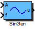

| Inports
| |
| A | Amplitude |
| f | Frequency |
| Outports
| |
| u | Sine wave output |
| Mask Parameters | |
| fmax | Maximum Frequency in Hz |
| Offset | Offset |
| Phase | Phase [-Pi..Pi] |
| ts_fact | Multiplication factor of base sampling time (in integer format) |
Generation of a sine wave with amplitude (A) and frequency (f).
Calculation fixed point implementation:
| uk = Ak sin + Aoffset |
For sine calculation a lookup table with 256 entries is used. This results in a short computation time but with the downside of reduced accuracy for the FiP32 implementation.
Calculation floating point implementation (parameter f_max is ignored):
| uk = Ak sin + Aoffset |
| FiP16 | 16 Bit Fixed Point Implementation |
| FiP32 | 32 Bit Fixed Point Implementation |
| Float32 | 32 Bit Floating Point Implementation |
| Float64 | 64 Bit Floating Point Implementation |
16 Bit Fixed Point Implementation
| Inports Data Type
| |
| A | int16 |
| f | int16 |
| Outports Data Type
| |
| u | int16 |
32 Bit Fixed Point Implementation
| Inports Data Type
| |
| A | int32 |
| f | int32 |
| Outports Data Type
| |
| u | int32 |
32 Bit Floating Point Implementation
| Inports Data Type
| |
| A | float32 |
| f | float32 |
| Outports Data Type
| |
| u | float32 |
64 Bit Floating Point Implementation
| Inports Data Type
| |
| A | float64 |
| f | float64 |
| Outports Data Type
| |
| u | float64 |